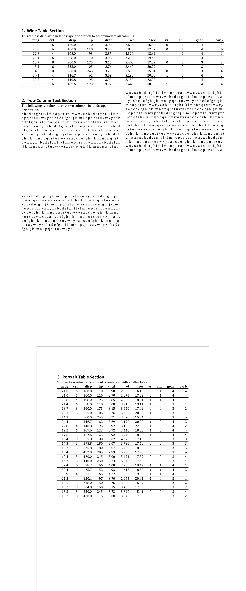

| prop_section {officer} | R Documentation |
A section is a grouping of blocks (ie. paragraphs and tables) that have a set of properties that define pages on which the text will appear.
A Section properties object stores information about page composition, such as page size, page orientation, borders and margins.
Important: When creating multiple sections in a document, it is strongly
recommended to use the same page_margins object for all sections to avoid
unwanted page breaks. Changing page margins between sections can cause Word to
insert automatic page breaks, even when using type = "continuous". To ensure
consistent behavior, create a single page_mar() object and reuse it across
all prop_section() calls. See the examples in body_end_block_section() which
demonstrate this best practice.
prop_section( page_size = NULL, page_margins = NULL, type = "continuous", section_columns = NULL, header_default = NULL, header_even = NULL, header_first = NULL, footer_default = NULL, footer_even = NULL, footer_first = NULL )
page_size |
page dimensions, an object generated with function page_size. |
page_margins |
page margins, an object generated with function page_mar. It is recommended to use the same margins object across all sections to prevent unintended page breaks. |
type |
Section type. It defines how the contents of the section will be placed relative to the previous section. Available types are "continuous" (begins the section on the next paragraph), "evenPage" (begins on the next even-numbered page), "nextColumn" (begins on the next column on the page), "nextPage" (begins on the following page), "oddPage" (begins on the next odd-numbered page). |
section_columns |
section columns, an object generated with function section_columns. Use NULL (default value) for no content. |
header_default |
content as a |
header_even |
content as a |
header_first |
content as a |
footer_default |
content as a |
footer_even |
content as a |
footer_first |
content as a |

Other functions for section definition:
page_mar(),
page_size(),
section_columns()
library(officer)
# Example 1: Mixing different section layouts ----
# This example demonstrates how to create a document with multiple sections,
# each with different page orientations and column layouts
# Define a landscape section with single column
# This is useful for wide tables or charts
landscape_one_column <- block_section(
prop_section(
page_size = page_size(orient = "landscape"),
type = "continuous"
)
)
# Define a landscape section with two columns
# Useful for text-heavy content in landscape mode (e.g., newsletters)
landscape_two_columns <- block_section(
prop_section(
page_size = page_size(orient = "landscape"),
type = "continuous",
section_columns = section_columns(widths = c(4.75, 4.75))
)
)
# Create a new document
doc_1 <- read_docx()
# Section 1: Landscape single column for wide table ----
# Add a title for the first section
doc_1 <- body_add_par(doc_1, "Wide Table Section", style = "heading 1")
doc_1 <- body_add_par(
doc_1,
"This table is displayed in landscape orientation to accommodate all columns."
)
# Add a wide table with multiple columns
doc_1 <- body_add_table(doc_1, value = mtcars[1:10, ], style = "table_template")
# End the landscape single-column section
doc_1 <- body_end_block_section(doc_1, value = landscape_one_column)
# Section 2: Landscape two columns for text content ----
# Add a title for the two-column section
doc_1 <- body_add_par(doc_1, "Two-Column Text Section", style = "heading 1")
doc_1 <- body_add_par(
doc_1,
"The following text flows across two columns in landscape orientation."
)
# Add text content that will flow across two columns
doc_1 <- body_add_par(doc_1, value = paste(rep(letters, 50), collapse = " "))
# End the landscape two-column section
doc_1 <- body_end_block_section(doc_1, value = landscape_two_columns)
# Section 3: Return to portrait orientation ----
# After ending the previous sections, we're back to portrait (default)
doc_1 <- body_add_par(doc_1, "Portrait Table Section", style = "heading 1")
doc_1 <- body_add_par(
doc_1,
"This section returns to portrait orientation with a taller table."
)
# Add a longer table in portrait orientation
doc_1 <- body_add_table(doc_1, value = mtcars[1:25, ], style = "table_template")
# Save the document
output_file_1 <- tempfile(fileext = ".docx")
print(doc_1, target = output_file_1)
# Example 2: Different headers and footers (first, even, odd pages) ----
# This example demonstrates the complete header/footer system with:
# - Different header/footer for the first page
# - Different header/footer for even pages (left-side pages in duplex printing)
# - Default header/footer for odd pages (right-side pages)
# Create sample text to generate multiple pages
lorem_text <- paste(
rep("Purus lectus eros metus turpis mattis platea praesent sed. ", 50),
collapse = ""
)
# Define content for FIRST page header
# Typically used for title pages or cover pages
header_first <- block_list(
fpar(
ftext(
"First Page Header - Title Page",
fp_text_lite(bold = TRUE, color = "#4472C4", font.size = 14)
),
fp_p = fp_par(
text.align = "center",
padding.bottom = 12,
border.bottom = fp_border(color = "#4472C4", width = 2)
)
)
)
# Define content for EVEN pages header (left-side pages when printed)
# In duplex printing, this appears on the left side
header_even <- block_list(
fpar(
ftext("Chapter Title", fp_text_lite(italic = TRUE, font.size = 10)),
fp_p = fp_par(text.align = "left")
)
)
# Define content for DEFAULT pages header (odd pages/right-side)
# In duplex printing, this appears on the right side
header_default <- block_list(
fpar(
ftext("Document Title", fp_text_lite(italic = TRUE, font.size = 10)),
fp_p = fp_par(text.align = "right")
)
)
# Define content for FIRST page footer
footer_first <- block_list(
fpar(
ftext(
"Company Name - Confidential",
fp_text_lite(font.size = 9, color = "#666666")
),
fp_p = fp_par(text.align = "center")
)
)
# Define content for EVEN pages footer (includes page number on left)
footer_even <- block_list(
fpar(
run_word_field(field = "PAGE", prop = fp_text_lite(font.size = 9)),
ftext(" | Document Name", fp_text_lite(font.size = 9)),
fp_p = fp_par(
text.align = "left",
padding.top = 6,
border.top = fp_border(color = "#CCCCCC", width = 1)
)
)
)
# Define content for DEFAULT pages footer (includes page number on right)
footer_default <- block_list(
fpar(
ftext("Document Name | ", fp_text_lite(font.size = 9)),
run_word_field(field = "PAGE", prop = fp_text_lite(font.size = 9)),
fp_p = fp_par(
text.align = "right",
padding.top = 6,
border.top = fp_border(color = "#CCCCCC", width = 1)
)
)
)
# Create section properties with all header/footer variants
# When all three are defined (first, even, default), Word will use:
# - header_first/footer_first for page 1
# - header_even/footer_even for pages 2, 4, 6, etc.
# - header_default/footer_default for pages 3, 5, 7, etc.
section_with_all_hf <- prop_section(
header_default = header_default,
footer_default = footer_default,
header_first = header_first,
footer_first = footer_first,
header_even = header_even,
footer_even = footer_even
)
# Create a new document
doc_2 <- read_docx()
# Add enough content to create multiple pages
# This will demonstrate how the different headers/footers appear
for (i in 1:20) {
doc_2 <- body_add_par(doc_2, paste0("Paragraph ", i, ": ", lorem_text))
}
# Apply the section properties with all header/footer configurations
doc_2 <- body_set_default_section(doc_2, value = section_with_all_hf)
# Save the document
# Open this document and scroll through pages to see:
# - Page 1: Special first page header/footer
# - Page 2: Even page header/footer with page number on left
# - Page 3: Odd page (default) header/footer with page number on right
# - And so on...
output_file_2 <- tempfile(fileext = ".docx")
print(doc_2, target = output_file_2)